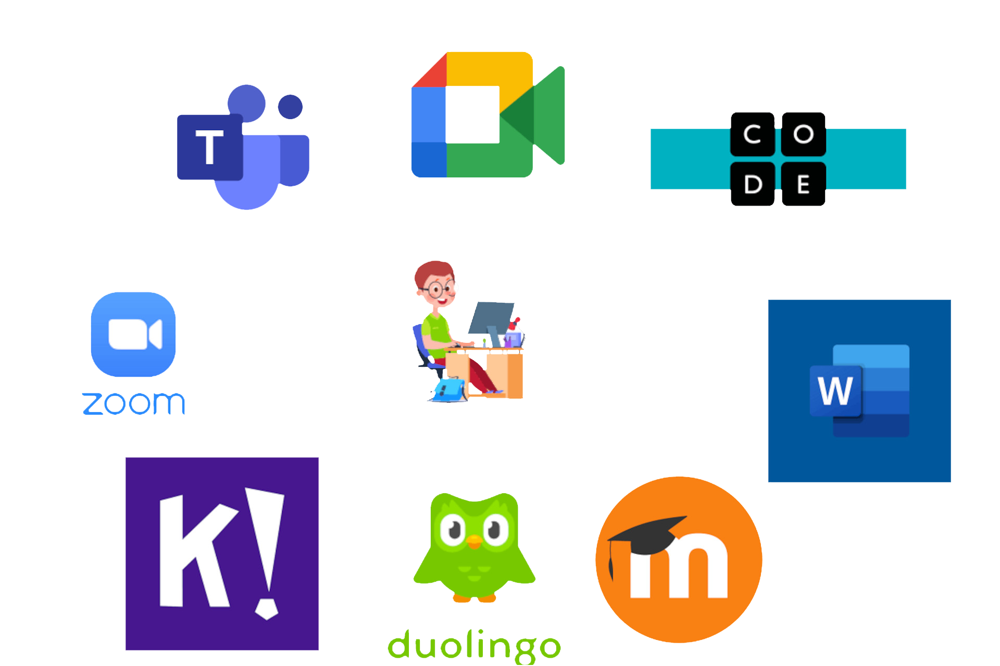

Software

Veelgebruikte SoftwareEr zijn veel verschillende soorten software die worden gebruikt in onderwijssystemen, afhankelijk van de specifieke behoeften van de school of instelling. Enkele voorbeelden van software die gebruikt kan worden in het onderwijs zijn:
|
De ontwikkeling van softwareHet gebruik van software in het onderwijs is de afgelopen decennia sterk geëvolueerd. In het verleden werd software in het onderwijs vooral gebruikt om leerlingen specifieke vaardigheden bij te brengen of om oefeningen te maken. Maar naarmate de technologie zich heeft ontwikkeld en ons begrip van hoe mensen leren is gegroeid, is de rol van software in het onderwijs veel diverser en verfijnder geworden. Een belangrijke ontwikkeling is de opkomst van online leren en onderwijs op afstand. Met de komst van het internet en de proliferatie van computers en mobiele apparaten is het voor studenten veel gemakkelijker geworden om online toegang te krijgen tot onderwijsmateriaal en hun lessen te volgen. Dit heeft geleid tot de ontwikkeling van een breed scala aan leerbeheersystemen (LMS) en andere instrumenten waarmee docenten online cursussen kunnen creëren en beheren, bronnen met studenten kunnen delen en de voortgang van studenten kunnen volgen. Een andere belangrijke ontwikkeling is het gebruik van educatieve software ter ondersteuning van gepersonaliseerd leren. Met behulp van algoritmen voor machinaal leren kan educatieve software zich nu aanpassen aan de behoeften en capaciteiten van individuele studenten, waardoor zij aangepaste leerervaringen krijgen die zijn afgestemd op hun unieke behoeften. In het algemeen heeft het gebruik van software in het onderwijs zich ontwikkeld van een eenvoudig instrument voor oefening tot een krachtig en flexibel instrument dat een breed scala aan onderwijs- en leerbenaderingen kan ondersteunen. |